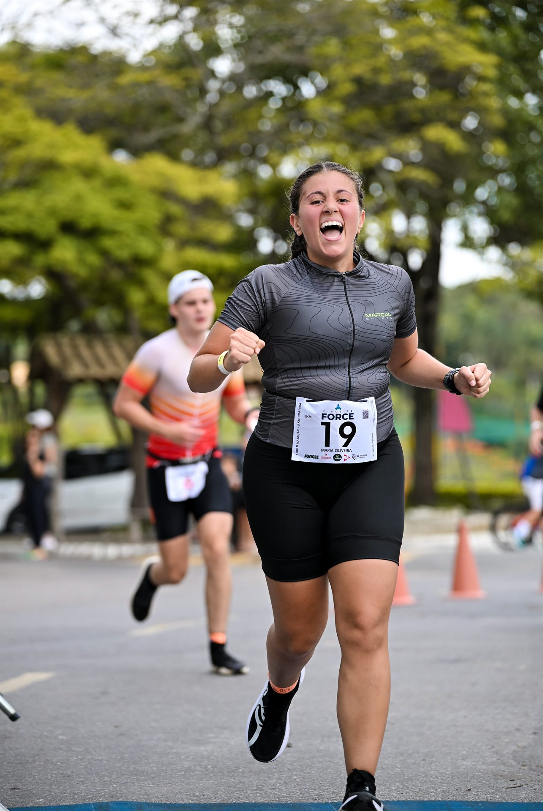
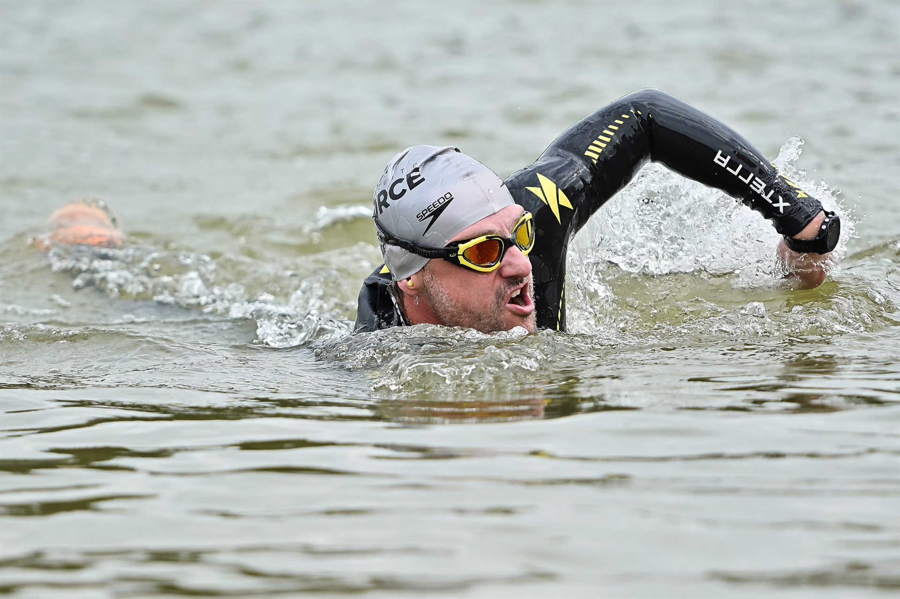
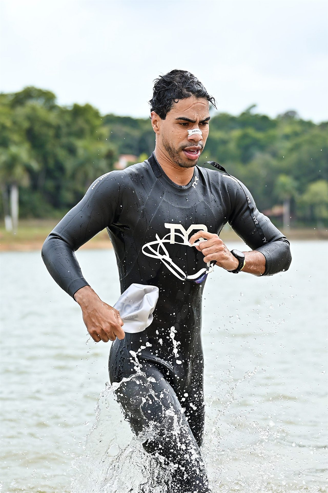
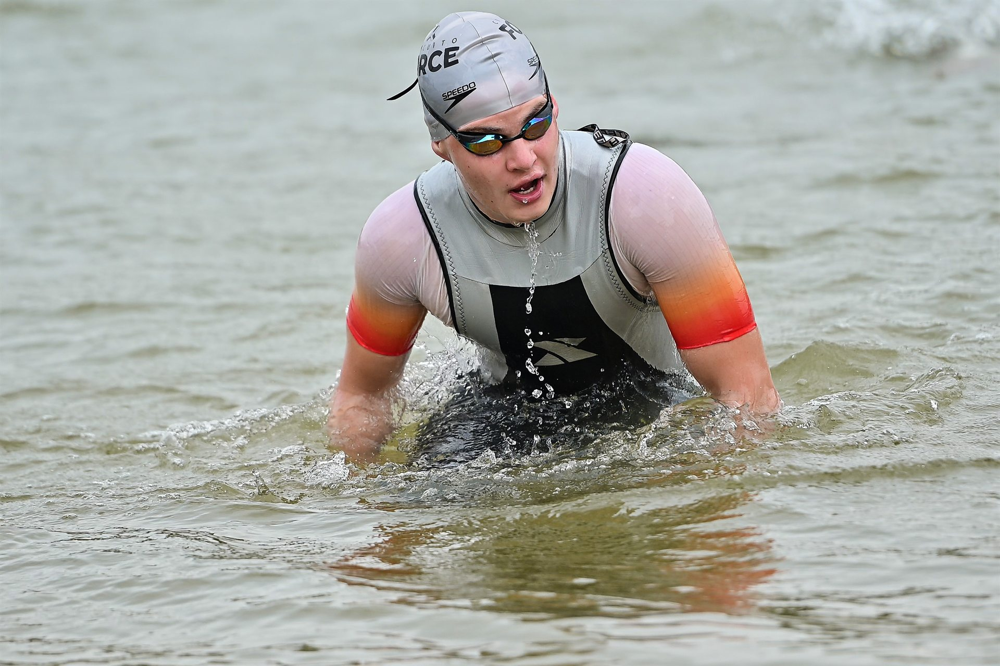
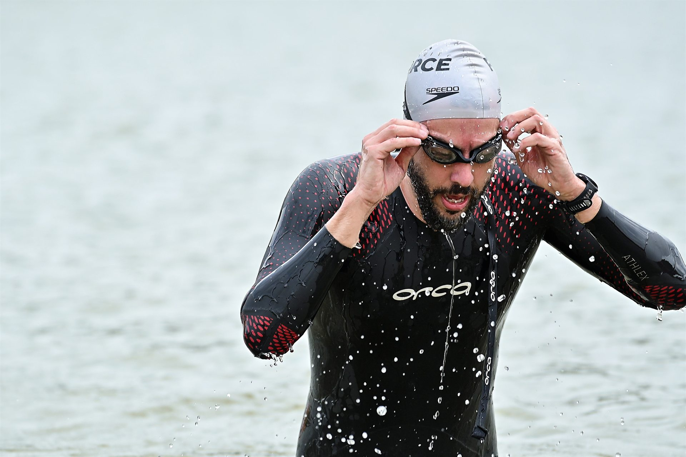
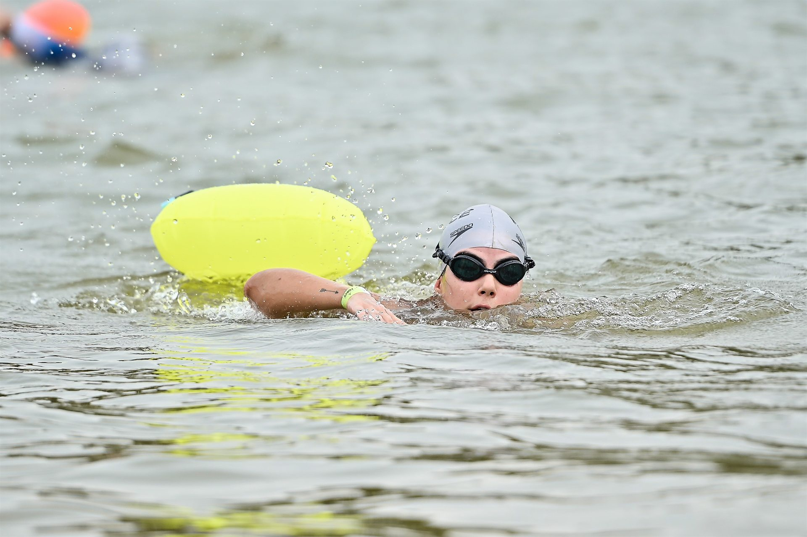
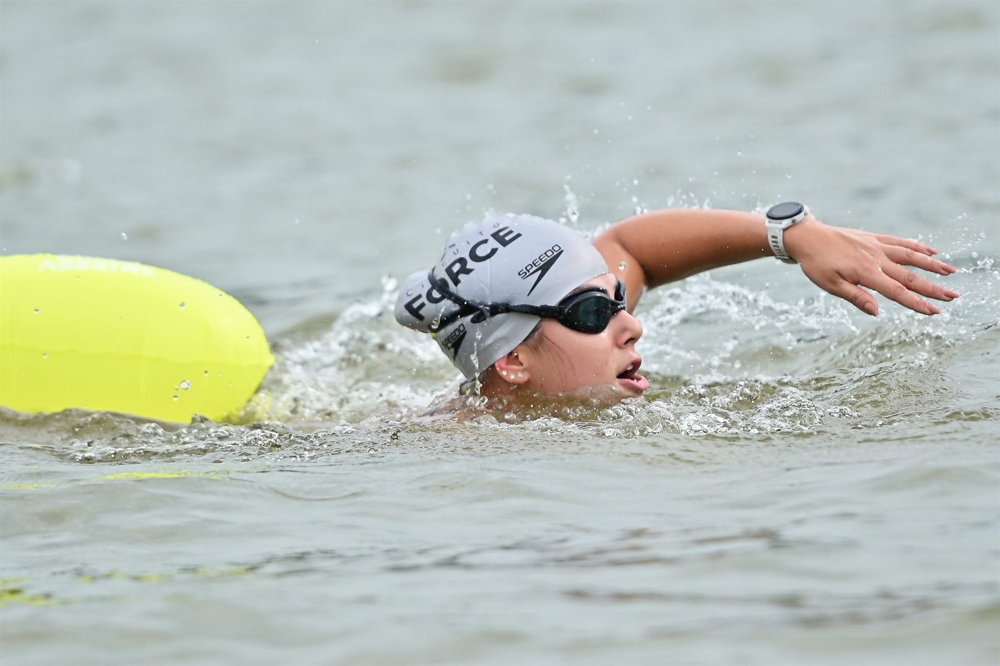
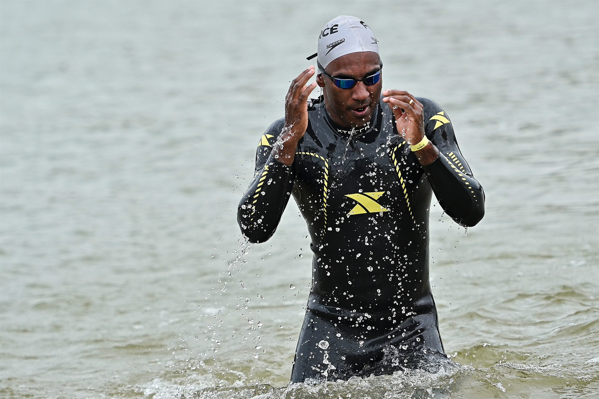
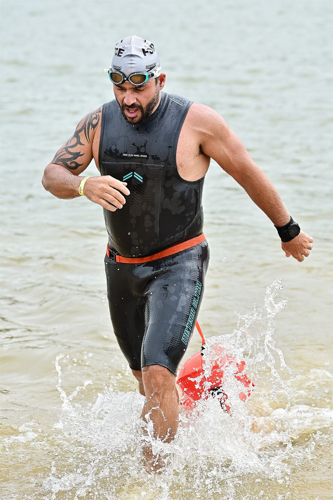

Um domingo de superação
Biathlon e águas abertas
Distâncias para diferentes níveis
Condomínio Nossa Fazenda
Obrigado por fazer parte
DA ÁGUA PARA
DA ÁGUA PARA
A PISTA. SEM PARAR.
O Circuito Force colocou técnica, resistência e coragem à prova em uma experiência que foi muito além do cronômetro.
Na água, cada braçada exigiu foco. Na corrida, cada passo confirmou a preparação. Nosso agradecimento aos atletas, parceiros, equipes de apoio e a todos que fizeram esse encontro acontecer com segurança e energia do início ao fim.

Como foi
INTENSIDADE EM
INTENSIDADE EM
CADA TRANSIÇÃO.
Da largada na água à chegada na corrida, cada etapa revelou preparo, concentração e vontade de ir além.



Circuito em movimento
REVIVA A
REVIVA A
EXPERIÊNCIA.
Três registros em vídeo para sentir novamente a intensidade, a concentração e a energia que marcaram o Circuito Force.
01
Força em movimento
Um recorte da energia vivida durante a prova.
02
Dentro do desafio
Concentração, técnica e superação em cada etapa.
03
Uma prova para lembrar
Os momentos que fizeram o Circuito Force acontecer.
Registros do dia
UM EVENTO
UM EVENTO
EM MOVIMENTO.
Uma seleção de momentos que traduzem a energia do Circuito Force: concentração, esforço, transição e conquista.





Circuito Force 2026
A PROVA TERMINA.
A PROVA TERMINA.
A CONQUISTA
CONTINUA.
Encontre seus registros oficiais, escolha suas imagens favoritas e leve com você as lembranças deste desafio.